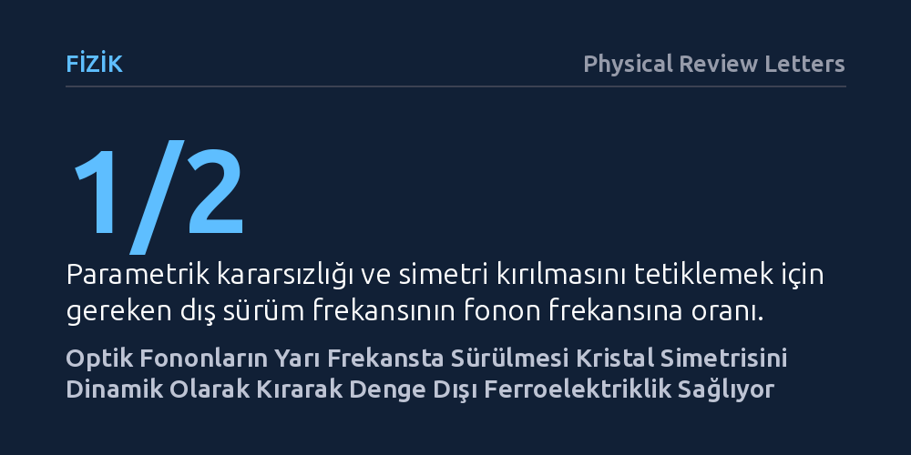

FIZIK · Physical Review Letters · 2026-09-08
Araştırmacılar, merkezcil tersinme simetrisine sahip kristallerde bu simetrinin lazerle dinamik olarak kırılıp kırılamayacağını kuramsal olarak inceledi. Optik fononların kendi frekanslarının yarısıyla sürülmesi durumunda simetrinin parametrik kararsızlıkla kırılabildiği ve denge dışı ferroelektrik bir hal üretilebildiği gösterildi.
Bir malzemenin elektriksel ve optik simetrilerinin yalnızca kimyasal yapısıyla sınırlı olmadığını, harici ışıkla dinamik olarak anlık biçimde baştan kurgulanabileceğini gösteriyor.

Katı hal fiziğinde kristallerin özellikleri, atomların uzaydaki periyodik dizilimi ve bu dizilimin sahip olduğu simetrilerle belirlenir. Özellikle merkezcil tersinme simetrisine sahip olan, yani merkezine göre ters çevrildiğinde tamamen aynı kalan kristaller, doğaları gereği net bir elektrik kutuplanması sergileyemez ve ikinci harmonik üretimi gibi bazı optik süreçlere izin vermez. Malzemenin bu simetrik yapısını değiştirmek geleneksel olarak sıcaklığı değiştirmeyi, kimyasal katkılama yapmayı ya da malzemeyi mekanik olarak esnetmeyi gerektirir.
Ancak son yıllarda fizikçiler, malzemenin kimyasal bileşimine dokunmadan, onu güçlü ve ultra hızlı lazer atımlarıyla uyararak geçici olarak yeni hallere sokmanın yollarını araştırmaktadır. Temel soru, normalde simetrik olan bir kristalin, doğrudan atomik titreşimlerinin uyarılmasıyla simetrisini kaybedip kendiliğinden elektrik kutuplanması geliştirip geliştiremeyeceğidir. Eğer bu mümkünse, malzemelerin elektronik ve optik tepkileri harici bir ışık kaynağıyla anlık olarak kontrol edilebilir.
Araştırmacı, bu soruyu yanıtlamak için kristal örgüdeki atomların birbirine zıt hareket ettiği ve optik fonon adı verilen yüksek frekanslı titreşim modlarını kuramsal bir modelle ele aldı. Düşük enerjili salınımlarda atomik bağlar ideal yaylar gibi davranırken, güçlü lazer ışığı altında titreşim genliği arttığında sistem doğrusal olmayan bir rejime geçer. Çalışmada, genlik büyüdükçe geri çağırıcı kuvvetin arttığı sertleşen Kerr tipi doğrusal olmama özelliği taşıyan genel bir fonon potansiyeli temel alındı.
İncelenen yöntem, salıncakta sallanan bir çocuğu doğru anlarda iterek genliği büyütmeye benzeyen parametrik rezonans mekanizmasına dayanmaktadır. Araştırmacı, sistemi fononun kendi doğal frekansında sürmek yerine, bu frekansın yaklaşık yarısına denk gelen bir periyodik dış alanla uyardı. Klasik mekanikte Duffing ve Mathieu denklemleriyle tarif edilen bu tür doğrusal olmayan parametrik sürüm süreçlerinin kararlılık analizi yapılarak, sistemin zaman içindeki dinamik evrimi analitik ve sayısal yöntemlerle hesaplandı.
Yapılan hesaplamalar, fonon frekansının yaklaşık yarısına ayarlanan dış alanın belirli bir kritik eşiği aştığında sistemde bir parametrik kararsızlık başlattığını ortaya koydu. Bu kararsızlık eşiğinden sonra sistem artık simetrik merkez konumunda kalamamakta ve kendiliğinden iki eşdeğer ama zıt kutuplu yeni kararlı salınım durumundan birine yerleşmektedir. Bu durum, kristalin sahip olduğu merkezcil tersinme simetrisinin dinamik olarak kırılması anlamına gelir.
Simetrinin kırılmasıyla birlikte malzeme daha önce sergileyemediği özellikler kazanır. Hesaplamalar, simetrisi kırılan bu yeni halde kristalin güçlü bir ikinci harmonik üretimi gösterdiğini ve net bir kalıcı olmayan elektrik dipol momenti, yani denge dışı ferroelektriklik geliştirdiğini belgelemektedir. Dış uyarım sürdüğü müddetçe malzeme, normalde sahip olmadığı kutupsal bir kristal gibi davranmayı sürdürmektedir.
Bu bulgu, malzemelerin temel fiziksel özelliklerinin yalnızca termodinamik dengedeki kimyasal yapılarıyla sınırlı olmadığını, ışıkla dinamik olarak da biçimlendirilebileceğini gösteren önemli bir kuramsal adımdır. Statik faz geçişlerine ihtiyaç duymadan, yalnızca terahertz veya kızılötesi lazer atımlarıyla bir malzemenin optik geçirgenliğini, kutuplanmasını ve doğrusal olmayan optik yanıtını pikosaniye mertebesinde açıp kapatmak mümkün olabilir.
Bununla birlikte, çalışma henüz deneysel olarak doğrulanmamış bir matematiksel ve fiziksel model sunmaktadır. Gerçek katı hal kristallerinde atomik titreşimlerin sönümlenmesi ve ısı kayıpları gibi etkenlerin bu dinamik kararlı durumu ne kadar süreyle koruyabileceği ilerleyen laboratuvar deneylerinde test edilmelidir. Doğrulanması halinde bu mekanizma, ultra hızlı optik anahtarlar ve ışıkla kontrol edilen geçici ferroelektrik bellek teknolojileri için yeni bir çalışma prensibi sunabilir.